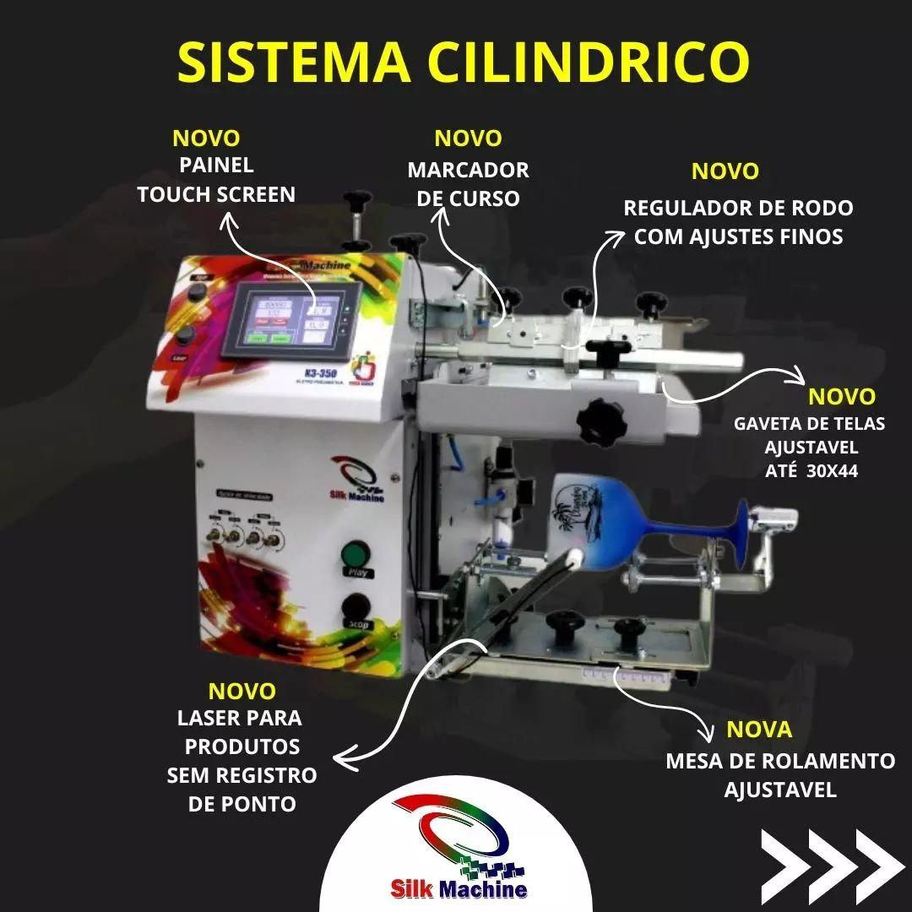
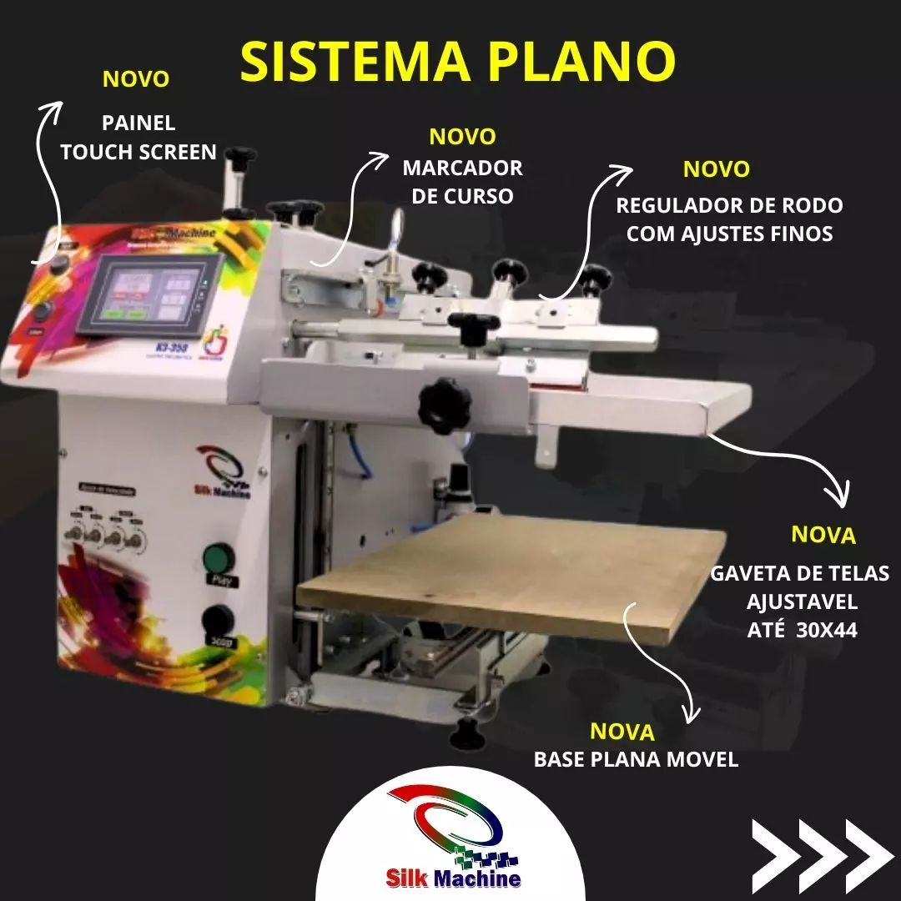

Por Que a K3-350 é a Máquina Serigráfica Mais Indicada?
Descubra a máquina que está revolucionando o mercado de personalização de copos e brindes. Alta produtividade, facilidade de uso e excelente retorno sobre investimento.
Conheça a K3-350Conheça a Máquina K3-350
A máquina serigráfica semi-automática mais versátil e eficiente do mercado, ideal para quem busca iniciar um negócio com baixo investimento e alta lucratividade.
Sistema Cilíndrico
Sistema cilíndrico com painel touch screen, marcador de curso e regulador de rodo com ajustes finos. Ideal para impressão em copos, canecas e produtos cilíndricos.
- Painel Touch Screen
- Marcador de Curso
- Regulador de Rodo com Ajustes Finos
- Gaveta de Telas Ajustável até 30x44
- Laser para Produtos sem Registro de Ponto
- Mesa de Rolamento Ajustável
Sistema Plano
Sistema plano versátil para impressão em superfícies planas como placas, capas de cadernos, caixas e outros brindes que exigem uma base de apoio reta.
- Painel Touch Screen
- Marcador de Curso
- Regulador de Rodo com Ajustes Finos
- Gaveta de Telas Ajustável até 30x44
- Base Plana Móvel
- Versatilidade para Diversos Materiais
Por Que Escolher a K3-350?
Alta Produtividade
Produz até 2.000 impressões por hora, permitindo atender demandas pequenas e médias com rapidez e eficiência.
Versatilidade Incomparável
Imprime em diversos tipos de copos, canecas com alça, taças e outros brindes, com ajustes precisos para diferentes formatos.
Facilidade de Uso
Sistema semi-automático com painel touch screen e marcador de ponto, ideal até mesmo para iniciantes.
Suporte Técnico Completo
100% fabricada pela Silk Machine, com suporte técnico permanente e treinamento disponível.
Baixo Investimento
Excelente custo-benefício para quem quer iniciar um negócio próprio ou gerar renda extra.
Robustez e Durabilidade
Máquina robusta com garantia de um ano, projetada para durar e oferecer segurança ao investimento.
Potencial de Lucro
Veja como você pode gerar uma renda significativa trabalhando apenas algumas horas por dia

Renda Extra em Casa
Imagine ter uma fonte de renda extra, sem sair de casa. Com a K3-350, você pode transformar sua casa em um centro de produção lucrativo.
Apenas 2 Horas por Dia
Com apenas 2 horas por dia, você pode produzir até 30.000 copos por mês e faturar até R$ 43.700,00. Simulação real disponível em nosso site.
Invista com Sabedoria
Boas decisões não são baseadas em preços, são baseadas em retornos. A K3-350 oferece o melhor retorno sobre investimento do mercado.
Treinamento Completo
Quer saber mais sobre as técnicas incríveis da serigrafia cilíndrica? Desde a sua criação até a venda final dos produtos, acompanhe nosso conteúdo!
Clientes Satisfeitos
Veja alguns dos nossos clientes que fizeram a escolha certa
Depoimentos Reais
Nossos clientes comprovam a qualidade e eficiência da K3-350. "É um equipamento de uma qualidade muito boa", afirma um de nossos clientes satisfeitos.
A K3-350 transformou meu negócio. Em poucos meses consegui triplicar minha produção e aumentar significativamente meus lucros.
Máquina excelente! Fácil de operar e com resultados profissionais. O suporte técnico da Silk Machine é excepcional.
Investimento que vale a pena. A qualidade das impressões é impressionante e a produtividade superou minhas expectativas.
Especificações Técnicas
Características Principais
- Capacidade: Até 2.000 impressões por hora
- Sistema: Semi-automático
- Painel: Touch Screen intuitivo
- Telas: Gaveta ajustável até 30x44cm
- Cores: Impressão em 1, 2 ou mais cores
- Garantia: 1 ano
Produtos Compatíveis
- Copos Long Drink
- Copos Caldereta
- Copos Ultra Drink
- Copos de Uísque
- Canecas com Alça
- Taças
- Canetas
- Outros brindes cilíndricos
Entre em Contato
Pronto para transformar seu negócio? Fale conosco e descubra como a K3-350 pode impulsionar seus resultados.
Informações de Contato
(44) 99921-7537
silkmachine.com.br
Segunda a Sexta: 8h às 18h
Sábado: 8h às 12h
Permanente e especializado
Treinamento incluído